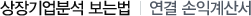

주식교실 ㅣ 기본적분석
1장. 기본적분석이란?
2장. 분석대상
3장. 분석대상-경제분석
4장. 분석대상-산업분석
5장. 분석대상-기업분석
6장. 가치평가에 대하여-가치평가란?
7장. 가치평가에 대하여-가치평가의 주요지표
8장. 가치평가에 대하여-가치평가 관련 잘못된 이해
9장. 가치평가에 대하여-가치평가를 통한 투자전략시 유의사항
10장. 상장기업분석 보는법-기업어음과 회사채 신용등급
11장. 상장기업분석 보는법-루머와 주가와의 관계
12장. 상장기업분석 보는법-주가관련 지표
13장. 상장기업분석 보는법-EV/EBITA를 통한 적정가치 산출물
14장. 상장기업분석 보는법-각종비율에 대한 이해
15장. 상장기업분석 보는법-원가구성과 매출구성에 대한 이해
16장. 상장기업분석 보는법-자본금변동관련 체크포인트
17장. 상장기업분석 보는법-현금흐름분석
18장. 상장기업분석 보는법-추정재무제표
19장. 상장기업분석 보는법-EVA분석
20장. 상장기업분석 보는법-회사채발행내역관련
21장. 상장기업분석 보는법-EPS추정
22장. 상장기업분석 보는법-부채구조
23장. 상장기업분석 보는법-손익분기분석
24장. 상장기업분석 보는법-연결 대차대조표
25장. 상장기업분석 보는법-연결 손익계산서

구분
98.12
99.12
00.12
매출액
3,372
2,752
3,020
매출총이익
399
330
295
영업이익
105
92
64
영업외수익
203
101
111
영업외비용
254
122
154
경상이익
54
70
22
법인세차감전이익
518
51
27
연결조정순익
△8
△13
△8
당기순이익
368
26
11
연결손익계산서의 경우도 연결대차대조표와 마찬가지로 계열사가 있는 경우 전체적인 매출액과 매출총이익 그리고 영업이익과의 비율이 안정적으로 성장하고 있는지를 살펴봐야 함
한편 영업외수지와 관련해서도 모기업과 달리 계열기업의 금융비용 등이 과다하지 않은지에 대한 여부도 관심 필요
당기순이익의 경우도 연결된 모기업과 계열기업의 전체적인 순이익수준을 고려할 필요가 있음. 특히 30대 또는 60대 계열기업군의 경우 별도로 재경부나 공정위가 정하는 적절한 부채비율이나 부채규모를 갖고 있는지 살펴볼 필요